← 返回阅读库 · 原论文目录
论文讲解阅读文档 · 机器人学 · v107
Learning Invariant Representations for RL without Reconstructi[2006.10742]
视频时长 00:15:29；讲解文字 7,238 字符；提取讲解画面 25 张。按视频原顺序阅读，每段文字保留时间戳。
文字来自整段视频的自动语音转写，按自然停顿分段，并与 PPT / 论文页面 / 演示画面对齐。未将讲解压缩为摘要；术语、数字和口述公式请结合画面及原论文核对。 阅读稿已校正规范部分明确术语误识别；原始逐字稿和每处修改记录另行保留。
讲解画面为源视频截图（640×360），不是可编辑 PPT 文件。全片按每秒 2 帧扫描内容变化，逐步展开页保留；连续动画保留代表画面。清晰度受源视频限制。
下载完整资料包 · 含离线 HTML、PDF、Word、全部 PPT 画面和字幕。
原论文与材料
Learning Invariant Representations for Reinforcement Learning without Reconstruction · 下载完整 PDF（16 页）
按时间阅读
00:00:00–00:00:20 · 画面 001
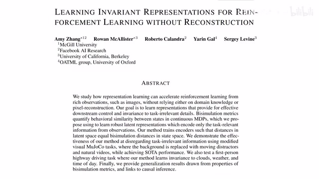
00:00:00–00:00:20 · 画面 001大家好今天我们来介绍 learning invariant representationsfor reinforcement learningwithout reconstruction 这篇论文的利益呢就像它的题目所说的一样我在不使用 reconstruction 的情况下来为 reforcement learning 学到一个好的 representation 这样呢就可以方便我们后面的 policy learning 那么在今天视频中呢我们会首先介绍一个核心概念叫做 bisimulation
00:00:20–00:00:40 · 画面 002
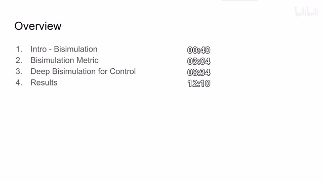
00:00:20–00:00:40 · 画面 002然后介绍作者是怎么样把这一种抽象的 bisimulation 的概念给它变成可以量化的一个 metric 来帮助我们的 network 去学一个好的 representation 那么随后是作者提出的算法以及作者汇报的结果那么首先来看 bisimulation 这里的定义简单来说你可以理解为我虽然观测到两个不同的状态但是这两个状态它们是等效的如果我们的状态空间中取两个状态 SI 和 SJ
00:00:40–00:02:40 · 画面 003
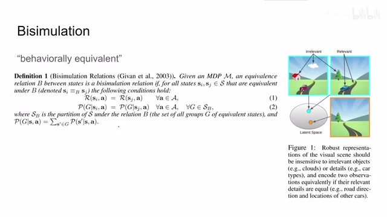
00:00:40–00:02:40 · 画面 003那么从这两个状态出发我们不管使用什么样的 action 他们得到的 reward 呢都是一样的同时呢不管使用什么样的 action 得到的下一个状态的概率分布也是一样的这里的这个下一个状态 j 呢他不一定说他们数值上是完全相等的那同样的假如这两个 j 如果他们是概念上也是等效的话那么虽然他们的数值结果不一样我们也可以认为这两个状态在 action 的这个作用下来转移到了一个相同的状态综上呢我们就定义出了一个 bisimulation relations 其实你看他这个定义吓人的其实他非常直接就是你想你在马尔科夫过程中呢你关心的就是这一个状态他去到下一个状态的概率还有他去到这个概率的过程中得到 reward 的大小那么只要限制住了这两个变量我们就可以确定两个状态呢是等效的那么为什么我们要确定这个等效的概念呢
这里我们看到作者给了我们一个 intuition 你像假如说在一个自动驾驶的场合我可能关心对面的来车关心着车道这都是我们需要关心的但是对于这个道路两旁的风景呢我们就不那么在意因此呢这种道路相同对面都有来车这种状态呢其实它们呢在我们的 latent space 中呢应该变为一个状态不管周围的天气啊还有说路边的这个景色啊等等的因为我们关注的呢只有道路和对面的来车而类似的呢即便我们的背景天气啊什么的相同但是只要关键的中间的道路信息和对面来车的信息不一样那么这两个图像呢依然对应到这个 latent space 中不同的两个点那么这个呢就是本文的 intuition 通过这种 bisimulation 的关系呢或者说 encoder 是关注有利于我们 policy learning 的这个 feature 好的那我们再回到这个 bisimulation 的定义来那么有的朋友呢其实可能已经注意到了
00:02:40–00:03:05 · 画面 004
00:02:40–00:03:05 · 画面 004在我们真实的世界里面像这个 reward 还有这些 probability 它都不是整数不那么好直接的话等号的那么应该怎么样处理这个问题呢难道说我们的 bisimulation relations 就这样就不能用了吗当然不是的这里前任的工作就说我使用一个 bisimulation metric
00:03:05–00:05:05 · 画面 005
00:03:05–00:05:05 · 画面 005用这个 metric 来衡量两个 state 它的相似程度这样子你就不是一刀切去定义它们两个是等效还是不等效你相当于有了一把尺子去衡量它们到底有多相近而对于这个 metric 它显然是要结合 reward 还有 future state 就是下一个时刻状态它们两个共同的因素作为考量对于 reward 来说我们想要这个 metric 凸显这两个状态之间的分歧所以一定要选一个能使这两个 reward 区别尽可能大的 action 这就是这里为什么有个 maximize 而对于这个 future states 呢因为它们是两个概率分布为了衡量两个概率分布的距离呢我们首先肯定想到的是 KL divergence 但是呢因为 KL divergence 它的距离呢并不是那么柔和所以呢这里选择的是 Wasserstein distance 那么这个距离呢它的想法是很美好的就是假设我再解一个最优的运输问题
假设我想把这个 distribution 塑造成这个 distribution，那通过把里面的每一个概率来给它搬运到相应的位置这样的方法，那么我这样搬运的过程中最小的代价是什么呢？那么这个最小的代价就是我们这里定义的 versus distance。那么很显然的，这个值呢不仅跟我们两个 distribution 他们的实际的值相关，同时呢也跟我们如何计算这个 cost。
就是我在搬运这个概率的时候它产生的 cost 相关。所以说呢，这里有一个 d 或者叫 distance matrix 用来衡量搬运过程中的 cost。那么有了这样一个定义之后呢，我们就可以来衡量两个 state 它们的相似程度了。这里的 c 呢是一个 hyperparameter，用来控制用来控制这两项的 tradeoff 嘛。那么这个定义看起来是很美好啊，像这个 reward 呢，我们直接可以在实际的样本中采到。
但是呢,有朋友已经注意到了,这个 Wasserstein Distance,就像它的发音一样,它是不太好估计的,难道我每次计算这个距离的时候,都要先解一个最优的运输问题,然后才能得到这个值吗?
00:05:05–00:05:10 · 画面 006
00:05:05–00:05:10 · 画面 00600:05:10–00:05:11 · 画面 007
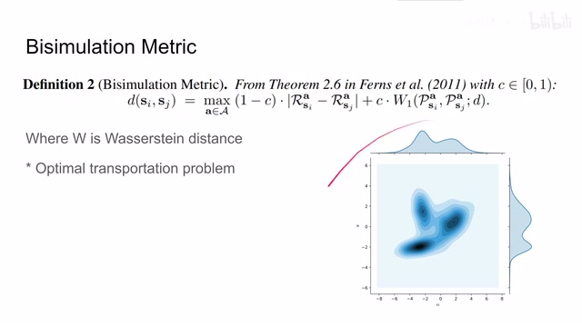
00:05:10–00:05:11 · 画面 00700:05:11–00:05:18 · 画面 008
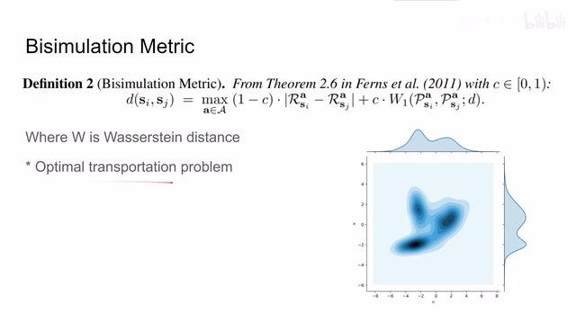
00:05:11–00:05:18 · 画面 008那么显然这样呢,是不太现实的,因此呢,作者在这里做了一个简化。
00:05:18–00:06:13 · 画面 009
00:05:18–00:06:13 · 画面 009就是说在最一般的情况下。我的 Future State Distribution它可能是任何的概率分布。在这里我们使用一个。Gaussian Distribution去逼近它去建模它更具体来说我们维护了一个 Dynamics Model这个 Model 就是通过我们现在的 Action State。来预测出它的 Future State Distribution而这个 Distribution它是一个 Gaussian Distribution而 Gaussian Distribution
给我们带来一个很好的特性。那就是这个 Wolfenstein distance那如果是二阶的 Wolfenstein distance而且是在计算两个高深 distribution 的情况下。它的公式可以非常简单的写成这种形式。也就是两个高深 distribution 的平均值。它们的 X 的平方它们的标准 X它们的 X 的平方在作者的代码中就是这样实现的。
那么通过这样一种近似。我们就把原来不太好估计的。
00:06:13–00:06:16 · 画面 010
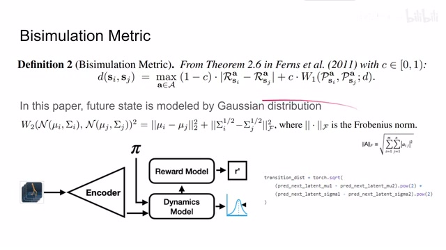
00:06:13–00:06:16 · 画面 010这个 bisimulation matrix
00:06:16–00:06:33 · 画面 011
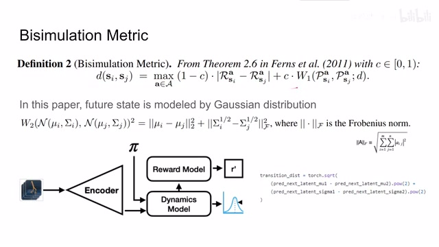
00:06:16–00:06:33 · 画面 011变成了一个相对好估计的一个值。那么有了这个 bisimulation metric 之后我们当然希望我们的 encoder 他在把我们的 state 投到 latent representation 投到 latent space 当中呢能够尽量满足这个 bisimulation metric 也就是说我们希望两个 representation 他们在 latent space 中的距离呢能够反映这两个 state 他们的 bisimulation metric
00:06:33–00:07:26 · 画面 012
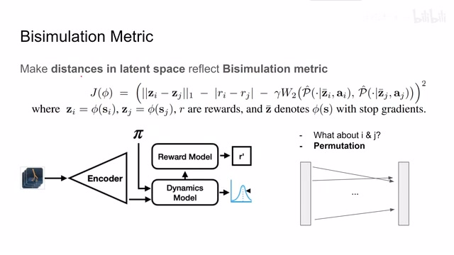
00:06:33–00:07:26 · 画面 012那么为了达成这个目的呢，我们只需要计算出这两个 latent representation 它们的距离，还有我们的 bisimulation metric 它实际的值就可以了。那么估计它的方法呢，我们刚刚已经介绍了。可以看到这里整个这个 loss 呢，是一个 MSE。左边呢是两个 state 它们的 representation 在 latent space 中的距离，这里用的是 smooth L1 distance然后呢，右边呢就是我们之前估计的 bisimulation metric。这里呢和之前的一点不同，就是作者使用了实际的 transition 过程中发生的 reward 来替代我们这个 reward model。这样你在写代码的时候呢，就更方便了一点。当然了，因为我们是希望直接训练这个 encoder，所以呢，这边这份 bisimulation metric 我们是要把所有跟它有关的梯度全部都停掉的。那么只要去优化这个目标函数
00:07:26–00:07:27 · 画面 013
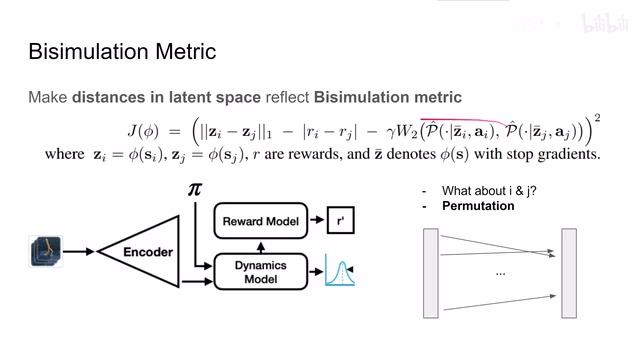
00:07:26–00:07:27 · 画面 01300:07:27–00:07:30 · 画面 014
00:07:27–00:07:30 · 画面 01400:07:30–00:08:34 · 画面 015
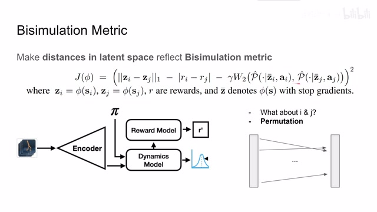
00:07:30–00:08:34 · 画面 015我们的 encoder 呢，就可以学到一个好的 latent representation。它的这个两个 state 之间的距离呢，能够正好反映这个 bisimulation metric。但是呢，你现在可能已经注意到了，我们的这个 loss function 中呢，它存在两个 state，两个 latent representation。这两个呢都是要经过我们的这个 encoder 来的。这个 loss function 呢，其实是一种 contrastive loss，对吧？它是需要对比两个样本才能产生的。那么怎么样产生这两个样本呢
作者这里用了一个非常取巧的方法，就是我先第一遍去过一下这个 encoder，得到一个 batch 的样本，然后呢交换这个 batch 中样本的顺序，这样把 sample 的顺序交换之后呢，再进行一一对比，就可以产生两个不同的 state 来组成的一个 distance，那么这样子呢，我们就可以计算出这个 loss function 来去优化我们的 encoder而关于这个 reward model 和 dynamics model 呢，我们之后马上介绍，那么来看看作者算法这里，因为他论文原来的那个算法的描述实在是不够清楚，不能够反映他实际的操作，所以呢，我把这个代码贴出来了，首先呢，我们先从 replay buffer 中采集出一些样本，因为这个框架呢，它是独立于 reforcement learning 的，它是学一个好的 representation，所以理论上呢，你可以接任何的 reforcement learning 的方法
00:08:34–00:10:24 · 画面 016
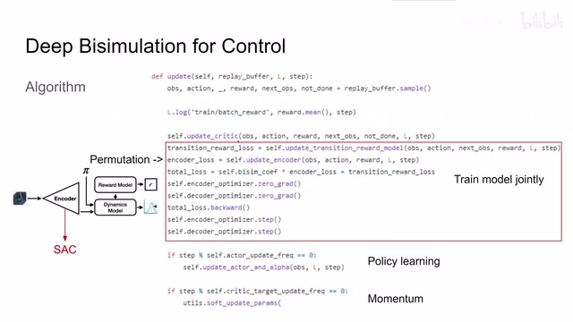
00:08:34–00:10:24 · 画面 016这里呢，做着接了我们的 Soft Actor-Critic SAC。可以看到，拿了样本之后呢，我们首先更新了 critic。然后呢，我们来看它如何训练这一整个模型。首先呢，是这个 transition reward model，也就是这两个 model。这样 model 呢，其实非常简单，因为你的这个 sample 中呢，已经包含了 reward next state 这种信息。它其实就是一个有监督的学习。所以呢，你在后面用 mse 就可以把这个 loss 来搞定了我们会在下一页具体来讲一下它这个 loss。那么对于这个 encoder 来说呢，我们刚刚介绍了，我们希望它能够反应 bisimulation metric。所以呢，我们之前定义了一个非常大的 loss。那么通过 permutation 交换 batch 中样本的这个顺序，就可以很轻松的计算出之前那个 loss。然后呢，把这个 encoder loss 和这个 transition reward loss 给它加起来。这个 loss 一起呢，我们求导数
就可以用来联合训练这个 encoderdynamic model 还有这个 reward model，就整个这一块都给他训练出来了。那么然后呢，再根据我们定义的频率去更新我们的 actor 也就是 policyalpha 是 Soft Actor-Critic 里面的这个 temperature。之前我们都介绍了，你如果不熟悉的话可以看我们之前的视频。还有呢，更新我们的 target network，这个也是大家非常熟悉的 momentum 去平滑移动这个 target network
好的，那么我们再聚集来看它怎么训练这个 transition reward model。这里我们看到呢，我们的 encoder 得到一个 latent representation。然后把这个 representation 加上我们的 action 送到这个 dynamics model 里面呢，就可以预测出下一个状态的 distribution。那么这个 distribution 呢，这里简化为一个 gaussian distribution。所以呢，我们有它的 milk 和 sigma。这里呢，因为作者还写了一种 deterministic 就是确定的
00:10:24–00:11:50 · 画面 017
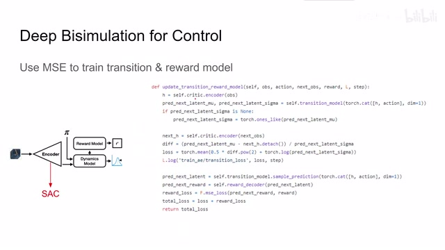
00:10:24–00:11:50 · 画面 017transition model 所以呢他做了一个判断然后呢我就要对比我预测出来这个 future staterelative representation 和我们真正的 relative representation 他们区别是怎么样的可以看到呢这是他们定义的 transition modelloss function 也就是这个 world dynamics 注意这里呢最好不要这么写啊应该是 with torch.no_grad 因为 detached 的话是你已经计算了 gradient 然后又给他拿掉相比之下呢你干脆就一开始就不要计算 gradient
然后因为我们的 future state 呢现在是用一个 distribution 来表示的我们在其中采样来产生一个确定的 latent representation 那么基于这个 latent representation 呢我们有一个 reward decoder 就是这个 reward model 用它呢来预测我们这一步这个 transition 它产生的 reward 那么这个 reward 呢就和我们的 ground truth 来直接所监督计算一个 mse 就可以了
那么这样呢把这个 reward loss 还有我们的这个 dynamic models 它的 loss 呢加起来就是我们在训练这两个 model 的时候它们共同的 loss 那么回到我们的全局的这个算法这里呢我们的 transition reward loss 呢我们刚刚已经介绍过了而这个 encoder loss 呢就是我们之前的这个公式把这两个 loss 组合起来呢最后呢就可以训练上面这个 model 了那么以上呢就是这篇论文的核心的算法
00:11:50–00:12:10 · 画面 018
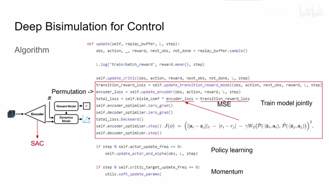
00:11:50–00:12:10 · 画面 018好的那么我们来看到作者汇报的一些结果首先是我们熟悉的 DMC 那么为了凸显算法的优势增加一些难度表达说我的算法能够注意到真正有用的这些 joint 这些控制信息而不是像这些没用的背景那作者这里设计了两种不同的难度
00:12:10–00:13:04 · 画面 019
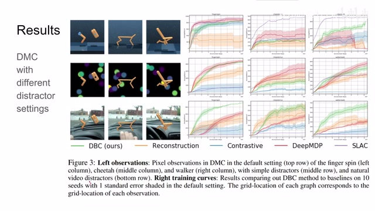
00:12:10–00:13:04 · 画面 019像这种呢就是一般的这个 distractors 然后这种呢后面是驾驶的情景下这个 distractors 希望我们的 agent 或者更确切的说是我们的 encoder 能够无视这些背景来去把真正关键的系统的 state 来提取出来可以看到呢随着我们背景呢变得复杂这个问题呢变得杂乱本文的算法的优势呢开始体现出来了这个环境也体现出作者为什么说 reconstruction 我们是不想要的因为你在 reconstruction 的过程中你一定会保留一些关于这些背景的信息但实际上这些信息都是不重要的那么这个可视化就很直观的展示了说没有 reconstruction 和做了 reconstruction 之间它们的产生的区别可以看到如果像本文这样不做 reconstruction 那么对于不同背景的但是相同状态的
00:13:04–00:13:29 · 画面 020
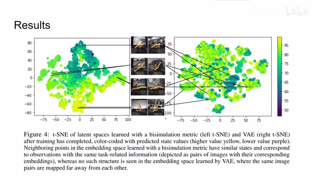
00:13:04–00:13:29 · 画面 020这样一个图像来说它们在 Latent Space 中的距离是非常接近的而如果我们使用 Reconstruction 关注的这些背景的这些东西的话那么也可以看到它在 Latent Representation 中的分布是非常杂乱的那么此外作者还做了一些 Generalization 的问题比如说我在比如这个表格是在 Simple Distractors 这种配置下做好的训练 pretrain 然后换了更复杂的背景像比如说驾驶等等这些视频作为背景
00:13:29–00:13:30 · 画面 021
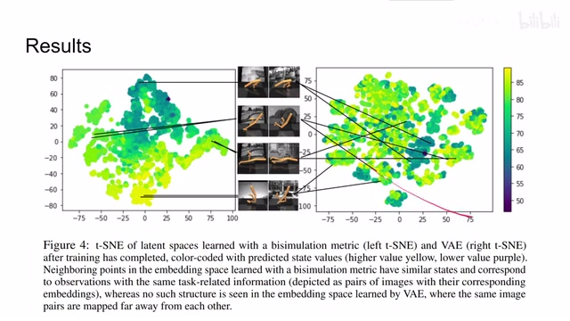
00:13:29–00:13:30 · 画面 02100:13:30–00:13:34 · 画面 022
00:13:30–00:13:34 · 画面 02200:13:34–00:14:29 · 画面 023
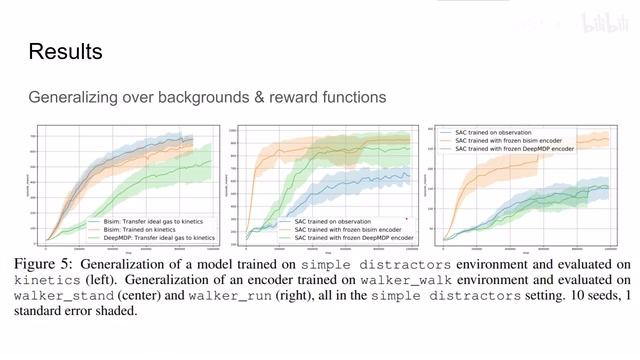
00:13:34–00:14:29 · 画面 023可以看到本文方法呢，AutoBomb 之前的这个 DeepMDP，那么这边这两个表格呢，就是用来专门评测 Encoder 的性能，这里呢，是使用 Walker Walk 这个环境呢，来训练了我们的 Encoder，然后呢，同样的是这个 Walker 这个配置，但是呢，去做这个 Stand 还是做 Run 这两个不同的动作，这两个不同的动作不同的任务呢，代表着有不同的 Reward Function，但是即便如此，本文的 Encoder 呢可以很快的把性能给它拉上来比起你从头开始训练一个 encoder 或者是其他的方法呢效果呢都要好也可以说本文学到了一个不错的 representation 那么随后呢作者还对比了其他的 bisimulation encoders 也就是其他的方法也想来估计这个 bisimulation metric 像这里呢这个人他使用的是一个 network 去来计算这个 distance
00:14:29–00:15:29 · 画面 024
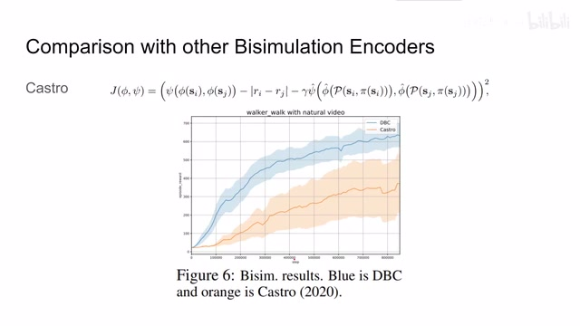
00:14:29–00:15:29 · 画面 024你可以看到本文的方法呢是 outperform 之前这个方法的那么最后呢作者还汇报了一些自动驾驶的这个场景包括对本文这个 bisimulation metric 它整个收敛的证明啊等等等等那么感兴趣的朋友呢请去原文查看当我说这句话的时候呢意味着我理解不了它我没法解释这个东西那么总的来说呢本文为我们提供了一种 representation learning 的思路提供了一种估计 bisimulation metric 的方法那虽然本文的这个网络的结构啊，还有这个 organism 嘛，它描述的不够清楚，甚至有一些误导性。但是呢，本文的思路呢，还是很新颖的。那么以上呢，就是我对这篇论文的简单的分析，感谢您的收看，再见。
00:15:29–00:15:29 · 画面 025
00:15:29–00:15:29 · 画面 025转写与来源说明 · 4 个自动复核提示
保留 63 个原始语音片段，4 个片段触发自动复核提示。提示仅用于定位可能的术语、重复或识别问题，不等于已确认错误。
讲解画面为源视频截图（640×360），不是可编辑 PPT 文件。全片按每秒 2 帧扫描内容变化，逐步展开页保留；连续动画保留代表画面。清晰度受源视频限制。
原视频：paper/合集_2026-10-16_机器人学/[论文简析]Learning Invariant Representations for RL without Reconstructi[2006.10742].mp4
SHA-256：07cd6dfab265962197a02f2c0bd70a26566ce076f3c86141f8f4a0a0c3d9b0c7
我的 Future State Distribution
Gaussian Distribution
而这个 Distribution
而 Gaussian Distribution
全文按视频语音与画面制作。原论文可从上方链接下载；完整资料包保留全文、原始逐字稿、字幕和校对记录。